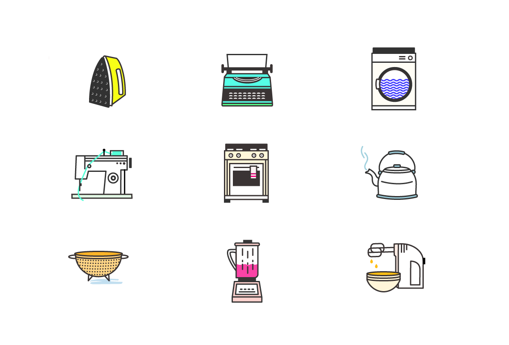

Making Icons
When I first moved to New York, my everyday commute was quite hefty, so I decided rather than waste time on the Metro North in a semi-slumberous state, I'd improve my illustration skills by working on various icon sets. I've always been very impressed by the work posted on Dribbble and figured this time spent commuting could also be used to level up. I also heard about all the awesome things SVGs are capable of and wanted to see for myself as well as play around with Velocity.js. Starting out, I made anything I wanted (or was able to), but eventually started to focus on icon sets and more complex shapes with gradients and shadows.
Connecticut Commute Icon Set
This collection chronicles my morning routine and was the first set I finished. See the animated version I made with velocity.js.
Sketchy Style Cooking Icons
These guys were made for EatHomeMade.com. The goal was to create an icon set which illustrated the purpose of the company and conveyed a old-fashioned, home cooked feel.
Adventure Icon Set
Going on an adventure? Don't forget to pack these essentials! (Cool update: the blue shoe icon won a contest to be turned into a pin!)
{kind=link}
Kitchen Icon Set
If you've ever cleaned up your house, or used a kitchen, you'll recognize these items. I was pretty proud of these, so I made them into a magnet set.
{kind=link}
Old-Timey Radios
Some vintage radios made for the inCahoots blog.
Magic Items
Presidential Mansions
Around President's Day, while I was eating lunch, I had the idea of illustrating all the historical presidential mansions. These were pretty time consuming, so I only made it through four. Also, as it turns out, most of the presidential mansions are not that spectacular looking (e.g. the John Adams Peacefield house) and probably wouldn't make appealing icons.
Summer Icon Set
Hip Hip Hooray! I survived my first winter and made it through to see sunlight past 5pm. In celebration, I made this set.
Camping Set
Just your everyday camping essentials. No backstory here.
Random Appliance Set
Initially, I just wanted to make a Toledo scale since Toledo scales are very nice looking, if you've ever seen one. Then I started making all sorts of old things. These are some of my first icons (so you can see they don't really match).